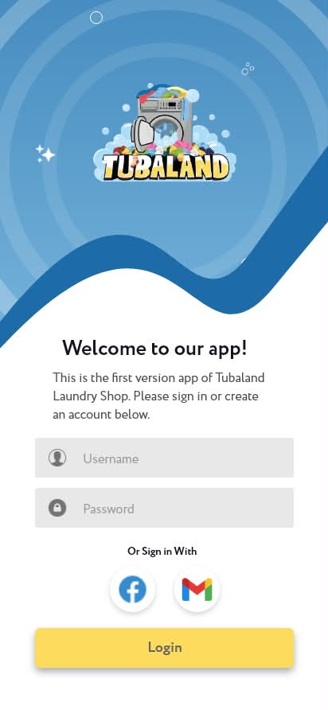

CAPSTONE PROJECT · 2025–2026
Tubaland
Laundry management made simpler through a customer-facing Android app and administrative interface.
- My role
- UI/UX Designer · Front-end Developer
- Tools
- Android · Java · Google Maps